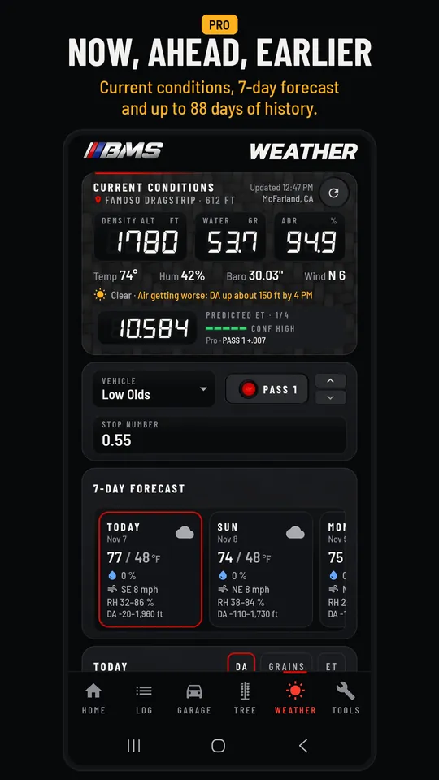

Lite vs Pro
Lite is free and it's a real logbook, not a demo. Pro adds the weather that does the work for you, the practice tree and the rest of the calculators.

Pro headline feature
Auto GPS local weather
With Pro, Pro Dial pulls local weather automatically using your phone's GPS. No typing temp, humidity and baro off a gauge. For a saved track, one tap pulls current or past weather onto your run and works out DA and grains for you. The Weather tab shows current conditions, a 7-day forecast and up to 88 days of past weather.
Weather comes from weather services. The full privacy policy has the details.
Side by side
| Feature | Lite (free) | Pro |
|---|---|---|
| Log, edit and export every run | Yes | Yes |
| Several cars in the Garage | Yes | Yes |
| ET and dial-in prediction with a confidence label | Yes | Yes |
| Mark runs Good, Questionable or Ignore | Yes | Yes |
| Your weather: enter temp, humidity and baro, and it calculates DA and grains | Yes | Yes |
| Timeslip scanner (beta) | Yes | Yes |
| Calculators | 8 | All 26 |
| Auto GPS local weather: current conditions pulled from your phone's location | No | Yes |
| Auto track weather logged with each run (one tap, auto DA and grains) | No | Yes |
| 7-day forecast and up to 88 days of weather history | No (sample preview only) | Yes |
| Practice tree | No | Yes |
| Onboard Baro on compatible phones | No | Yes |
The Lite Weather page is a sample preview, not live weather.
The 26 race and shop calculators
Pro gets all 26. The 8 marked Lite are included free in Lite too.
Race
HP from ET
Estimate horsepower from ET or trap speed and race weight.
Eighth to quarter mile Lite
Turn an eighth-mile ET and MPH into a quarter-mile estimate.
ET change from HP and weight
Predict the new ET after a horsepower or weight change.
ET Estimate
Estimate ET and MPH from horsepower and race weight.
Win in feet Lite
Turn a margin of victory in seconds into feet.
Drivetrain
Gear ratio
RPM and MPH in every gear for your trans, axle and tire.
Converter slip Lite
Converter slip % from RPM, MPH, gear, axle and tire.
Engine
Displacement Lite
Cubic inches and cc from bore, stroke and cylinders.
Compression Lite
Static compression ratio and quench from head and piston specs.
Dynamic compression
Real cranking compression from your cam's intake closing.
Carb CFM
Carburetor size the engine needs from CID, RPM and VE.
HP and torque
Convert between horsepower and torque at an RPM.
Pistons and rods
Mean piston speed and rod ratio.
Injector size
Injector flow needed for your HP, fuel and duty cycle.
Blower pulley ratio
Blower drive ratio and blower RPM from pulley sizes.
Chassis
Coil springs
Spring and wheel rate from corner weight and motion ratio.
Brake sizing
Line pressure and pedal travel from pedal, master and calipers.
4-link
Instant center and anti-squat from bar mounts. Saved per car.
Scale and ballast Lite
New front/rear split after adding ballast. Saved per car.
Shop
Wire gauge and fuse size
Wire gauge for a load and run length, with voltage drop and fuse.
Welding (MIG, TIG, flux-core)
Starting settings by metal and thickness.
Tap & drill
Tap drills, die blanks, clearance holes, NPT and the drill chart.
Ohm's law and power
Volts, amps, ohms and watts. Type any two, get the rest.
Units Lite
Convert length, weight, volume, pressure, torque, power and more, with fl oz and fractions.
Bolt torque Lite
Bolt and lug torque by size, grade and finish.
Material weights
Weight and strength of tube or sheet; compare two materials.
Trying Pro
First-time Pro subscribers get 2 weeks free through Google Play. Check the Google Play page for the current price. Cancel any time in Google Play. No app account needed.